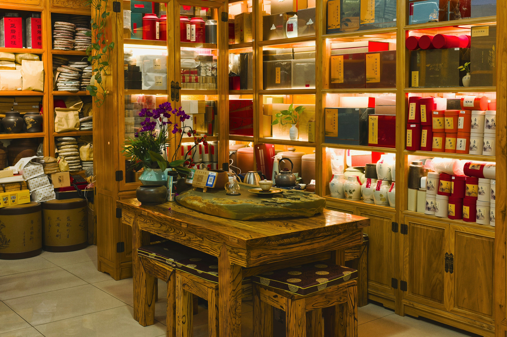

Îngrijire naturală pentru echilibrul tău zilnic
HerbaVital îți oferă informații clare despre plante medicinale, remedii naturiste și obiceiuri inspirate din natură.
Natură, grijă și simplitate

Plante medicinale
Descoperă puterea plantelor folosite tradițional pentru echilibru și stare de bine.

Ceaiuri și infuzii
Arome naturale și combinații blânde pentru momente de relaxare zilnică.

Uleiuri și extracte
Esențe concentrate din natură, potrivite pentru îngrijire și ritualuri de relaxare.

Miere naturală
Dulceață autentică din natură, ideală pentru ceaiuri, gustări și obiceiuri sănătoase.

Preparare tradițională
Metode simple și naturale prin care plantele își păstrează aroma și proprietățile.

Polen și produse apicole
Ingrediente apicole valoroase, apreciate pentru aportul lor nutritiv și natural.

Despre HerbaVital
HerbaVital aduce mai aproape de tine o selecție atent organizată de plante medicinale, remedii naturiste și produse inspirate din natură, pentru momentele în care ai nevoie de echilibru, relaxare sau îngrijire blândă. Punem accent pe simplitate, calitate și informații ușor de înțeles, astfel încât să poți descoperi rapid opțiuni potrivite pentru rutina ta zilnică. Fie că te interesează ceaiurile din plante, extractele naturale sau soluțiile pentru îngrijire externă, HerbaVital îți oferă un punct de plecare clar și prietenos pentru alegeri mai conștiente.
Alege în funcție de nevoia ta
Somn și relaxare
Plante precum lavanda sau mușețelul sunt asociate tradițional cu relaxarea.
Digestie
Menta și ghimbirul sunt frecvent utilizate în ceaiuri pentru confort digestiv.
Imunitate
Echinacea este utilizată tradițional pentru susținerea sistemului imunitar.
Energie
Unele plante pot contribui la vitalitate prin obiceiuri naturale și echilibrate.